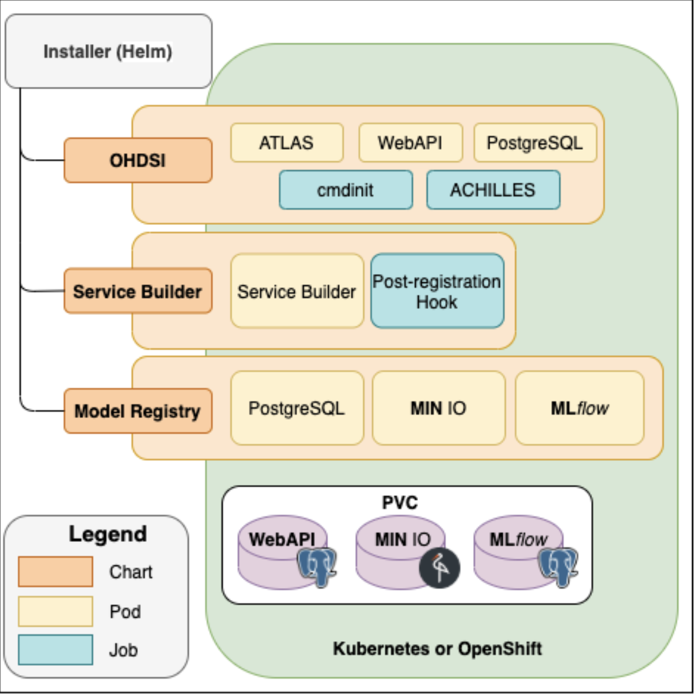

Installer
The Installer component installs the fully functional DPM60 into Kubernetes or OpenShift Container Platform using Helm charts. Upon installation, models for different endpoints are available for the user. Helm Charts are simply Kubernetes manifests combined into a single package that can be installed to Kubernetes clusters. Once packaged, installing a Helm Chart into a cluster is as easy as running a single helm install, which really simplifies the deployment of containerized applications.
Design of DPM360 Installer

Prerequisites
- Kubernetes v1.18+
- Helm v3
- Persistent Volume claims for Postgres Database ( Refer to the Configuration section in each of the charts)
Installing the Chart
Step 1: Install the OHDSI Stack by following the instructions below. This will install the OHDSI components ( Atlas, WebAPI, a Postgres Database, and Achilles)
DPM360 - OHDSI stack installer
This chart is an adaptation of chart listed by chgl/ohdsi
A sample values.yaml file is provided in the repository here.
Introduction
This chart deploys the OHDSI WebAPI and ATLAS app. on a Kubernetes cluster using the Helm package manager.
Prerequisites
- Kubernetes v1.18+
- Helm v3
- Persistent Volume claims for Postgres Database ( Refer to the Configuration section below)
Installing the Chart
To install the chart with the release name ohdsi:
$ helm repo add chgl https://chgl.github.io/charts
$ helm repo update
$ helm install ohdsi chgl/ohdsi -n <your workspace> --values values.yaml
The command deploys the OHDSI WebAPI and ATLAS app. on the Kubernetes cluster in the default configuration. The configuration section lists the parameters that can be configured during installation.
Tip: List all releases using
helm list
Uninstalling the Chart
To uninstall/delete the ohdsi:
$ helm delete ohdsi -n ohdsi
The command removes all the Kubernetes components associated with the chart and deletes the release.
Configuration
The following table lists the configurable parameters of the ohdsi chart and their default values.
| Parameter | Description | Default |
|---|---|---|
| imagePullSecrets | image pull secrets used by all pods | [] |
| nameOverride | partially override the release name | "" |
| fullnameOverride | fully override the release name | "" |
| commonAnnotations | annotations applied to all deployments and jobs | [] |
| postgresql.enabled | enable an included PostgreSQL DB. if set tofalse, the values under webApi.db are used |
true |
| postgresql.postgresqlDatabase | name of the database to create see:https://github.com/bitnami/bitnami-docker-postgresql/blob/master/README.md#creating-a-database-on-first-run | "ohdsi" |
| postgresql.existingSecret | Name of existing secret to use for PostgreSQL passwords. The secret has to contain the keyspostgresql-password which is the password for postgresqlUsername when it is different of postgres, postgresql-postgres-password which will override postgresqlPassword, postgresql-replication-password which will override replication.password and postgresql-ldap-password which will be sed to authenticate on LDAP. The value is evaluated as a template. |
"" |
| postgresql.replication.enabled | should be true for production use | false |
| postgresql.replication.readReplicas | number of read replicas | 2 |
| postgresql.replication.synchronousCommit | set synchronous commit mode: on, off, remote_apply, remote_write and local | "on" |
| postgresql.replication.numSynchronousReplicas | from the number ofreadReplicas defined above, set the number of those that will have synchronous replication |
1 |
| postgresql.metrics.enabled | should also be true for production use | false |
| webApi.enabled | enable the OHDSI WebAPI deployment | true |
| webApi.replicaCount | number of pod replicas for the WebAPI | 1 |
| webApi.db.host | database hostname | "host.example.com" |
| webApi.db.port | port used to connect to the postgres DB | 5432 |
| webApi.db.database | name of the database inside. If postgresql.enabled=true, then postgresql.postgresqlDatabase is used | "ohdsi" |
| webApi.db.username | username used to connect to the DB. Note that this name is currently used even if postgresql.enabled=true | "postgres" |
| webApi.db.password | the database password. Only used if postgresql.enabled=false, otherwise the secret created by the postgresql chart is used | "postgres" |
| webApi.db.existingSecret | name of an existing secret containing the password to the DB. | "" |
| webApi.db.existingSecretKey | name of the key inwebApi.db.existingSecret to use as the password to the DB. |
"postgresql-postgres-password" |
| webApi.db.schema | schema used for the WebAPI's tables. Also referred to as the "OHDSI schema" | "ohdsi" |
| webApi.podAnnotations | annotations applied to the pod | {} |
| webApi.cors.enabled | whether CORS is enabled for the WebAPI. Sets thesecurity.cors.enabled property. |
false |
| webApi.cors.allowedOrigin | value of theAccess-Control-Allow-Origin header. Sets the security.origin property. set to * to allow requests from all origins. if cors.enabled=true, cors.allowedOrigin="" and ingress.enabled=true, then ingress.hosts[0].host is used. |
"" |
| webApi.podSecurityContext | security context for the pod | {} |
| webApi.service | the service used to expose the WebAPI web port | {"port":8080,"type":"ClusterIP"} |
| webApi.resources | resource requests and limits for the container. 2Gi+ of RAM are recommended (https://github.com/OHDSI/WebAPI/issues/1811#issuecomment-792988811) You might also want to use webApi.extraEnv to set MinRAMPercentage and MaxRAMPercentage: Example: helm template charts/ohdsi \ --set webApi.extraEnv[0].name="JAVA_OPTS" \ --set webApi.extraEnv[0].value="-XX:MinRAMPercentage=60.0 -XX:MaxRAMPercentage=80.0" |
{} |
| webApi.nodeSelector | node labels for pods assignment see:https://kubernetes.io/docs/user-guide/node-selection/ | {} |
| webApi.tolerations | tolerations for pods assignment see:https://kubernetes.io/docs/concepts/configuration/taint-and-toleration/ | [] |
| webApi.affinity | affinity for pods assignment see:https://kubernetes.io/docs/concepts/configuration/assign-pod-node/#affinity-and-anti-affinity | {} |
| webApi.extraEnv | extra environment variables | [] |
| atlas.enabled | enable the OHDSI Atlas deployment | true |
| atlas.replicaCount | number of replicas | 1 |
| atlas.webApiUrl | the base URL of the OHDSI WebAPI, e.g.https://example.com/WebAPI if this value is not set but ingress.enabled=true and constructWebApiUrlFromIngress=true, then this URL is constructed from ingress |
"" |
| atlas.constructWebApiUrlFromIngress | if enabled, sets the WebAPI URL tohttp://ingress.hosts[0]/WebAPI |
true |
| atlas.podAnnotations | annotations for the pod | {} |
| atlas.podSecurityContext | security context for the pod | {} |
| atlas.service | the service used to expose the Atlas web port | {"port":8080,"type":"ClusterIP"} |
| atlas.resources | resource requests and limits for the container | {} |
| atlas.nodeSelector | node labels for pods assignment see:https://kubernetes.io/docs/user-guide/node-selection/ | {} |
| atlas.tolerations | tolerations for pods assignment see:https://kubernetes.io/docs/concepts/configuration/taint-and-toleration/ | [] |
| atlas.affinity | affinity for pods assignment see:https://kubernetes.io/docs/concepts/configuration/assign-pod-node/#affinity-and-anti-affinity | {} |
| atlas.extraEnv | extra environment variables | [] |
| atlas.config.local | this value is expected to contain the config-local.js contents | "" |
| cdmInitJob.enabled | if enabled, create a Kubernetes Job running the specified container seecdm-init-job.yaml for the env vars that are passed by default | false |
| cdmInitJob.image | the container image used to create the CDM initialization job | {"pullPolicy":"Always","registry":"docker.io","repository":"docker/whalesay","tag":"latest"} |
| cdmInitJob.podAnnotations | annotations set on the cdm-init pod | {} |
| cdmInitJob.podSecurityContext | PodSecurityContext for the cdm-init pod | {} |
| cdmInitJob.securityContext | ContainerSecurityContext for the cdm-init container | {} |
| cdmInitJob.extraEnv | extra environment variables to set | [] |
| achilles.enabled | whether or not to enable the Achilles cron job | true |
| achilles.schedule | when to run the Achilles job. Seehttps://kubernetes.io/docs/concepts/workloads/controllers/cron-jobs/#cron-schedule-syntax | "@daily" |
| achilles.schemas.cdm | name of the schema containing the OMOP CDM. Equivalent to the AchillesACHILLES_CDM_SCHEMA env var. |
"synpuf_cdm" |
| achilles.schemas.vocab | name of the schema containing the vocabulary. Equivalent to the AchillesACHILLES_VOCAB_SCHEMA env var. |
"synpuf_vocab" |
| achilles.schemas.res | name of the schema containing the cohort generation results. Equivalent to the AchillesACHILLES_RES_SCHEMA env var. |
"synpuf_results" |
| achilles.cdmVersion | version of the CDM. Equivalent to the AchillesACHILLES_CDM_VERSION env var. |
"5.3.1" |
| achilles.sourceName | the CDM source name. Equivalent to the AchillesACHILLES_SOURCE env var. |
"synpuf-5.3.1" |
| ingress.enabled | whether to create an Ingress to expose the Atlas web interface | false |
| ingress.annotations | provide any additional annotations which may be required. Evaluated as a template. | {} |
| ingress.tls | ingress TLS config | [] |
CDM_URL |
Location of Athena Vocabulary file in tar.gz format. It could be either a s3 url or a local file | |
SYNPUF1K_URL |
Location of Synthetic 1K data file in tar.gz format. It could be either a s3 url or a local file. You can download this fromhere. | |
RESULTS_TABLE_URL |
This will be the URL to get the Results schema. Example: http://server:port/WebAPI/ddl/results?dialect= |
|
CDM_SCHEMA |
Value of the CDM_SCHEMA in your CDM Database | |
OHDSI_WEBAPI_SCHEMA |
Value of the WebAPI Schema in your database | |
RESULTS_SCHEMA |
Value of Results Schema in your daabase | |
TEMP_SCHEMA |
Value of Temp schema in your database | |
Specify each parameter using the --set key=value[,key=value] argument to helm install. For example:
$ helm install ohdsi chgl/ohdsi -n ohdsi --set postgresql.postgresqlDatabase="ohdsi"
Alternatively, a YAML file that specifies the values for the parameters can be provided while installing the chart. For example:
$ helm install ohdsi chgl/ohdsi -n ohdsi --values values.yaml
Initialize the CDM using a custom container
- A custom docker image to initialize the CDM database with Athena Vocabularies and Synthetic 1K patient data is built based on the broad guidelines outlined here. This custom image is utilized in the cdmInitJob.image parameter in the values.yaml.
The cdmInit container takes in the following parameters to initialize the data:
CDM_URLLocation of Athena Vocabulary file in tar.gz format. It could be either a s3 url or a local file SYNPUF1K_URLLocation of Synthetic 1K data file in tar.gz format. It could be either a s3 url or a local file. You can download this fromhere. RESULTS_TABLE_URLThis will be the URL to get the Results schema.
Example:
http://server:port/WebAPI/ddl/results?dialect=
CDM_SCHEMA Name of the schema that contains the CDM tables in your database.
OHDSI_WEBAPI_SCHEMA Name of the schema that contains the WebAPI tables in your database.
RESULTS_SCHEMAName of the schema that contains the results tables in your database.
TEMP_SCHEMA Name of the schema that contains the temp results table in your database.
Troubleshooting
If the deployment does not work, possible todo following this https://www.kubeflow.org/docs/started/workstation/minikube-linux/
Step 2: Install the Model Registry by following the instructions below. This will install Mlflow with a Postgres and Minio backend.
MLFlow and dependcies
DPM360 - Helm chart for deploying Disease progression model framework including OHDSI tools ( Atlas, WebAPI), MLFlow and its dependencies ( minio for object storage and postgresql for relational database).
Pre-requisites
Download the chart repo
In your cloud environment, create 3 persistent volume claims ( one for OHDSI postgres, one for minio-mlflow and one for postgres-mlflow)
Update the values.yaml with paramters matching your cloud environment
Introduction
This chart deploys the MLFlow along with a minio based storage and postgesql database on a Kubernetes cluster using the Helm package manager.
Prerequisites
- Kubernetes v1.18+
- Helm v3
Installing the Chart
Once you have cloned the repo (https://github.com/IBM/DPM360)
$ cd to the folder where you have installer/
$ helm install modelregistry ./model-registry -n <your namespace> --values ./model-registry/values.yaml
This will create 3 deployments in your kubernetes cluster ( mlflow, minio and postgresql)
Update your ingress to allow access to the services created by the helm chart.
The command deploys the MLFlow (version 1.14.1) along with minio for storage and postgresql on the Kubernetes cluster in the default configuration. The configuration section lists the parameters that can be configured during installation.
Tip: List all releases using
helm list
Uninstalling the Chart
To uninstall/delete the modelregistry:
$ helm delete modelregistry -n <yournamespace>
The command removes all the Kubernetes components associated with the chart and deletes the release.
Configuration
The following table lists the configurable parameters of the model-registry chart and their default values.
| Parameter | Description | Default |
|---|---|---|
| MINIO | This section is for minio configuration | |
| minio.image | minio images used for this installation | "" |
| minio.accessKey | access key ( usename) required by minio | "" |
| minio.secretKey | secret key required by minio | [] |
| minio.rootuser | minio console user | "" |
| minio.rootpassword | minio console user password | "" |
| minio.resources | section used to configure your pod memory and cpu settings | "" |
| minio.persistence | This section specifies the PVC that you had created a part of the pre-requisites | true |
| minio.container port | container port ( typically set to 9000) | 9000 |
| minio.httpport | port that is exposed in your service specification. Typcially set to 9000 | "9000" |
| Postgres for MLFlow | This section describes Postgres for MLFlow configuration | |
| pgmlflow.enabled | enable the postgres deployment for mlflow | true |
| pgmlflow.image | postgres images used ( 12.5 in this example) | 1 |
| pgmlflow.POSTGRES_USER | postgres user used for the installation | "postgres" |
| pgmlflow.POSTGRES_PASSWORD | password for the postgres user | postgres |
| pgmlflow.resources | use this section to specify the pod memery and cpu limits | "" |
| pgmlflow.containerport | container port for postgres db | "5432" |
| pgmlflow.httpport | port for running the postgres service. If you have multiple postgres instances, this will be different from the container port | "5452" |
| MLFlow | This section lists the configuration for MLFlow | |
| mlflow.enabled | enable the mlflow for this deployment | "true" |
| mlflow.image | specifies the mlflow image used | {} |
| mlflow.MLFLOW_HOST | MLFlow host name | `` |
| mlflow.BACKEND_STORE_URI | datastore used for backend. In our case we have used postgresql | "" |
| mlflow.POSTGRES_HOST | postgres service name | {} |
| mlflow.MINIO_HOST | minio endpoint that will be exposed by the ingress | {} |
| mlflow.MLFLOW_TRACKING_URI | mlflow endpoit that will exposed by the ingress | {} |
| mlflow.MLFLOW_S3_ENDPOINT_URL | minio endpoint that will be exposed by the ingress. | {} |
| mlflow.AWS_ACCESS_KEY_ID | minio user id | {} |
| mlflow.AWS_SECRET_ACCESS_KEY | minio access key for the user | [] |
| mlflow.AWS_MLFLOW_BUCKET_NAME mlflow.AWS_BUCKET / AWS_MLFLOW_BUCKET |
name of the bucket used for mlflow experiments |
mlflow-experiments |
| mlflow.resources | use this section to define the memory and cpu for the pod | 1 |
| mlflow.containerport | port number of the container. Typically it is 5000 | "9000" |
| mlflow.httpport | port number that the service listens. Typically same as containerport | "9000" |
Specify each parameter using the YAML file that specifies the values for the parameters while installing the chart. For example:
$ helm install modelregistry ./model-registry -n <your namespace> --values ./model-registry/values.yaml